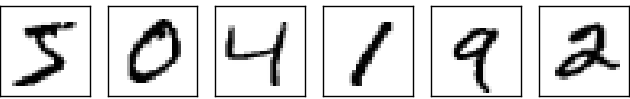
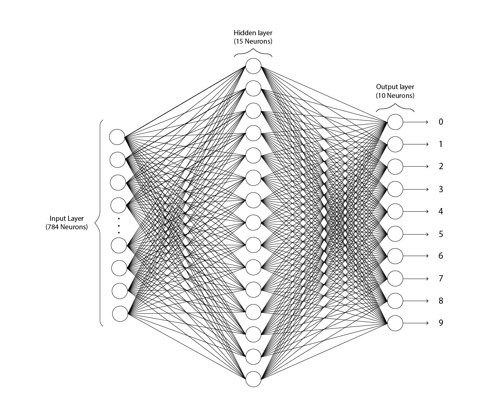

A Network to Classify Handritten Digits
Now we return to hand-written digits recognition. We're gonna work with only one digit at a time for now. An image containing multiple digits can be processed (by first another network dividing them into single digits and another network recognizing those single digits). But we're gonna focus on single digits, we assume that our images are already broken. Individual digits might look like this:
We'll use a three layer network for classifying our digits:
The input layer has 784 neurons, one for each pixel of a 28x28 image. This is the resolution of our many scanned handritten images. Just like the image of digits at the start of this page. Most of the input neurons are not shown in the image for simplicity. Each input neuron has a greyscale value. 0.0 denoting white and 1.0 denoting black and inbetween values gradually darkening shades of grey.
Our hidden layer has 15 neurons. The number of neurons is denoted by 'n'. This is an arbritary number and we'll experiment with with other number of neurons and even more layers. For now we'll stick to one hidden layer with 15 neurons.
The output layer has 10 neurons, each for digits 0-9. If the first neuron fires, meaning if its value is close to 1 or 1, then we can say that the network thinks the given image is a 0. If the second neuron fires then the network thinks the given image is a 1 and so on. The neuron with the highest value is what the network thinks the image is.